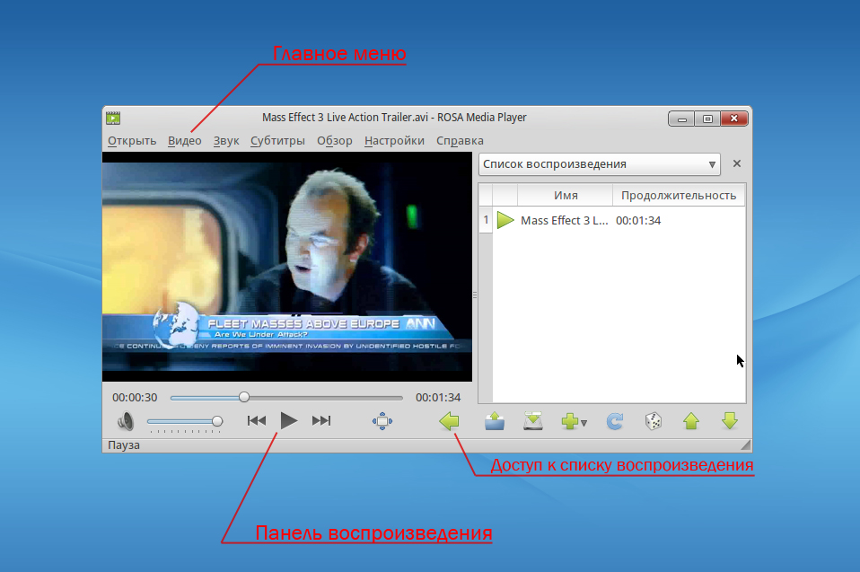
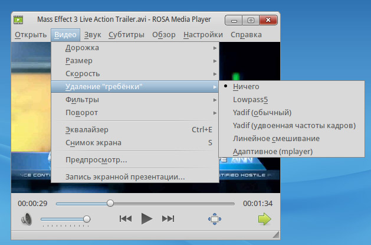
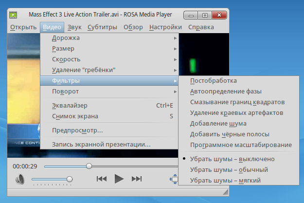
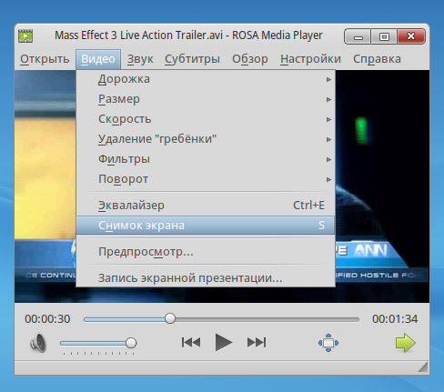
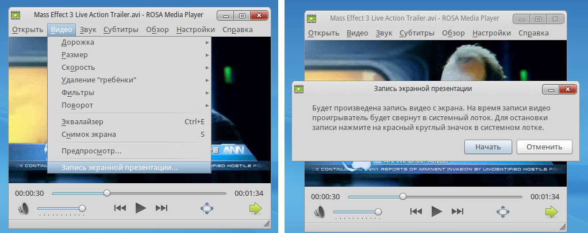
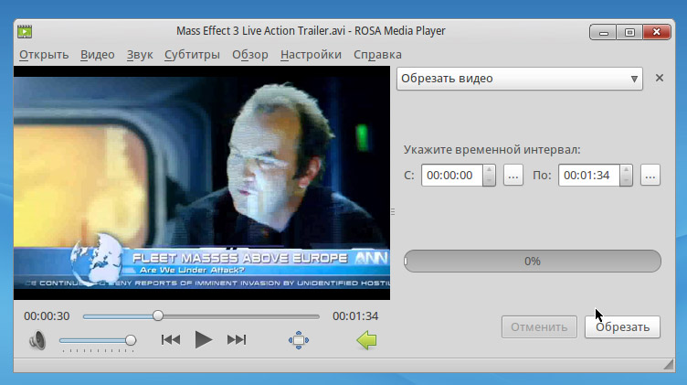
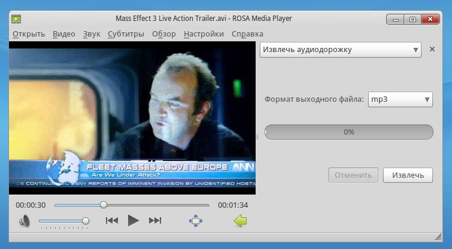

Руководство пользователя ROSA Media Player
Введение
Rosa Media Player (далее, ROMP) — это необычный видеопроигрыватель, отличающийся от подобных ему решений благодаря удачному сочетанию функциональности и легкости управления. Мы стараемся развивать наш продукт в сторону упрощения интерфейса, отказываясь от ненужных простому пользователю элементов. Параллельно с этим мы увеличиваем возможности программы, добавляя новые инструменты, которые нигде ранее не были представлены.
Технически ROMP основан на технологиях MPlayer и SMPlayer. Однако последний, по нашему мнению, слишком перегружен настройками, кроме того, из-за разницы идеологий наши наработки не могут быть внедрены в проект. Именно эти два фактора привели нас к идее создания собственного плеера.
Характеристики
ROMP работает со всеми основными типами видеофайлов. Строго говоря, полный список поддерживаемых форматов идентичен MPlayer, который стал «донором» для нашего приложения.
Наиболее популярные видео форматы, которые может открыть плеер:
Установка
Процесс установки не отнимает много времени и может производиться как через консоль, так и при помощи «Центра управления РОСА».
Первый вариант. Достаточно открыть консоль и, находясь в режиме суперпользователя, ввести следующую команду:
urpmi rosa-media-player rosa-media-player-plugin
Для установки в графическом режиме требуется открыть «Центр управления РОСА» и перейти к вкладке «Управление программами». Далее следует щелкнуть по пункту «Установка и удаление программ» и в левом окне выбрать вкладку «Видео». В открывшемся списке приложений надо выбрать пакеты rosa-media-player и rosa-media-player-plugin.
Стоит отметить, что если у вас отсутствует вкладка «Видео», или вы не можете обнаружить пакеты в списке приложений, то это означает, что в вашей системе не настроены источники приложений. О том, как их подключать, можно прочесть тут.
Интерфейс
Как можно увидеть на снимке экрана, большую часть полезной площади занимает проигрываемый ролик. В верхней части находится главное меню, через которое осуществляется контроль над всеми действиями программы.
Внизу расположилась панель воспроизведения. Она выполнена в «классическом» стиле, и запутаться тут трудно. Наибольший интерес представляет небольшая зеленая стрелка в нижнем правом углу, которая открывает список воспроизведения, а также доступ к функциям редактирования видео.

Особенности программы
Создавая ROMP, в первую очередь мы хотели привнести нечто новое в такую, казалось бы, тривиальную вещь, как видеопроигрыватель. И нам это удалось, поэтому стоит рассмотреть подробнее наиболее интересные возможности приложения.
Воспроизведение
Одним из главных достоинств нашего проигрывателя являются расширенные возможности работы с видео. Ниже мы расскажем о наиболее интересных и полезных нововведениях.
Удаление «гребенки»
«Гребенка» — это неприятный эффект, возникающий при просмотре на компьютере видео, снятого некоторыми видеокамерами. Заключается в том, что границы быстро движущихся объектов становятся нечеткими, словно по объекту «прошлись» расческой.
ROMP обладает необходимыми инструментами для борьбы с этой проблемой. Все они доступны в пункте «Видео», который находится в главном меню.

Фильтры
ROMP помогает избавляться не только от эффекта «гребенки», но и от многих других неприятных искажений. В пункте «Фильтры», который легко можно найти во вкладке «Видео», имеется множество разных вспомогательных средств. Среди них: постобработка, «смазывание» границ квадратов, удаление краевых эффектов, а также несколько режимов борьбы с шумами.

Снимок экрана
Используя эту небольшую функцию, можно оперативно сделать снимок какой-либо части видео. Сразу после щелчка создается картинка в формате png и сохраняется в папке «Изображения».

Запись экранной презентации
Благодаря этому инструменту можно забыть об использовании каких-либо сторонних программ для записи с экрана. Щелкните по этому пункту, и появится сообщение о том, что сейчас начнется съемка всех действий, которые происходят на экране компьютера. Нажмите «Начать».
Проигрыватель свернется в системный лоток. Для остановки записи нажмите на красный значок, который появится в лотке. Запись сохранится в папке «Видео».

Редактирование
Рынок приложений насыщен серьезными профессиональными программами, которые в зоне своей компетентности практически всесильны. Однако, зачастую эти приложения сложны, и неподготовленному пользователю трудно их использовать. Мы считаем, что таким людям важна простота продукта и доступность основных инструментов. Проще говоря: если вам надо разрезать обычный лист бумаги, то нужна не бензопила, а элементарные ножницы. Поэтому мы решили встроить в ROMP простейшие функции редактирования видео.
Для доступа к ним нажмите на зеленую стрелку в нижнем правом углу. Откроется боковая панель со списком воспроизведения, вверху которой можно найти выпадающий список. Откройте его и выберите требуемый пункт: «Обрезать видео» или «Извлечь аудиодорожку».
Резка видео
Инструмент достаточно прост, а его интерфейс отличается лаконичностью.
Стоит обратить внимание на небольшие кнопки «...» рядом с полями для ввода начала и конца интервала: при нажатии на них текущее время воспроизведения добавляется в поле. Благодаря этому можно не вводить вручную цифры, а использовать ползунок для поиска требуемого момента.
Для того, чтобы вырезать кусок видео, нажмите на кнопку «Обрезать». Оно сохранится в одной папке с исходным роликом.

Сохранение аудио дорожки
Часто пользователям нравится только звуковое оформление ролика, в то время как видео-ряд интересует их намного меньше. Теперь ROMP может оперативно сохранить звуковую дорожку из видео, позволяя вам не открывать каждый раз видеофайлы.
В этом инструменте трудно запутаться. Вы можете выбрать формат выходного файла (в текущей версии доступны форматы mp3 и ogg), а для сохранения нажмите на кнопку «Извлечь». Файл появится в одной папке с исходным видео.

Основные возможности программы
Конечно же, список опций ROMP не ограничивается лишь этими шестью пунктами. На самом деле их огромное количество. Вы можете выбирать различные потоки видео, изменять размеры ролика в широком диапазоне, менять скорость воспроизведения и параметры картинки, в частности: контрастность, яркость, оттенок, насыщенность и другие. Помимо этого имеется большой выбор инструментов для работы со звуковым сопровождением видео. Вы можете выбирать аудио дорожки, подгружать их из файлов, производить тонкую настройку звука при помощи эквалайзера и фильтров. А если вдруг вам захочется посмотреть любимое кино с субтитрами, то и тут ROMP предложит вам большой функционал: можно оперативно подгрузить субтитры из файла и «подогнать» размер, а если их нет, то одним щелчком мыши найти требуемые на opensubtitles.org.
Заключение
Мы искренне надеемся, что ROMP понравится вам. Несмотря на то, что мы постоянно совершенствуем свои продукты, никто не застрахован от ошибок. Пожалуйста, пишите нам о них на support@rosalab.ru. Также всегда к вашим услугам форум forum.rosalab.ru